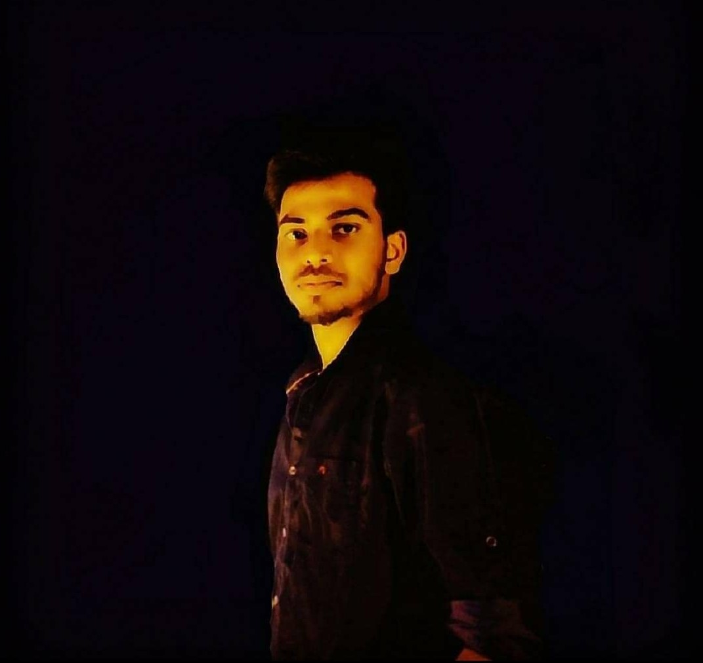

About Me
I am a person who is positive about every aspect of life no matter how difficult the situation will be. Currently I am working on my self Startup (Ranchi Foods) and it will be launched soon maybe after a month or two because from planning to implementation it takes time. I love to play sports like Cricket, Football, Badminton etc.I must say that I can cook really well and actually it's my passion. I love to be in nature under open sky with birds because its the only thing which will heal you from bad side of world.
As a Information Science student I just adopted myself into Coding and stuffs. Honestly, I used to hate Coding in my 1st year of Engineering just because of dull teachers, low quality of Education System in our country which only focous on copy paste assignments and boring syllabus.This is the issue of almost 93% Engineering students, but suddenly when i started getting into coding I found it very intresting just because of myself. I also make EDM tracks and a beginner in music production field and hope so one day I will be able to make my own EDM tracks like Martin Garrix. So yeah this was all about me. Thanks for tolerating me throughout those lengthy paragharphs. Your feedback will be appriciated.